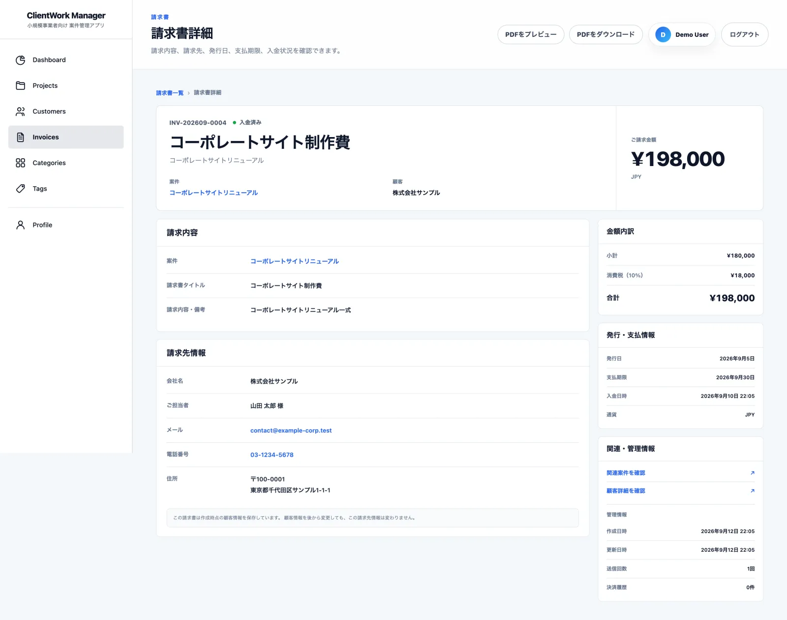
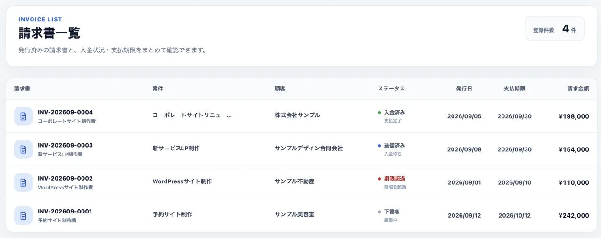
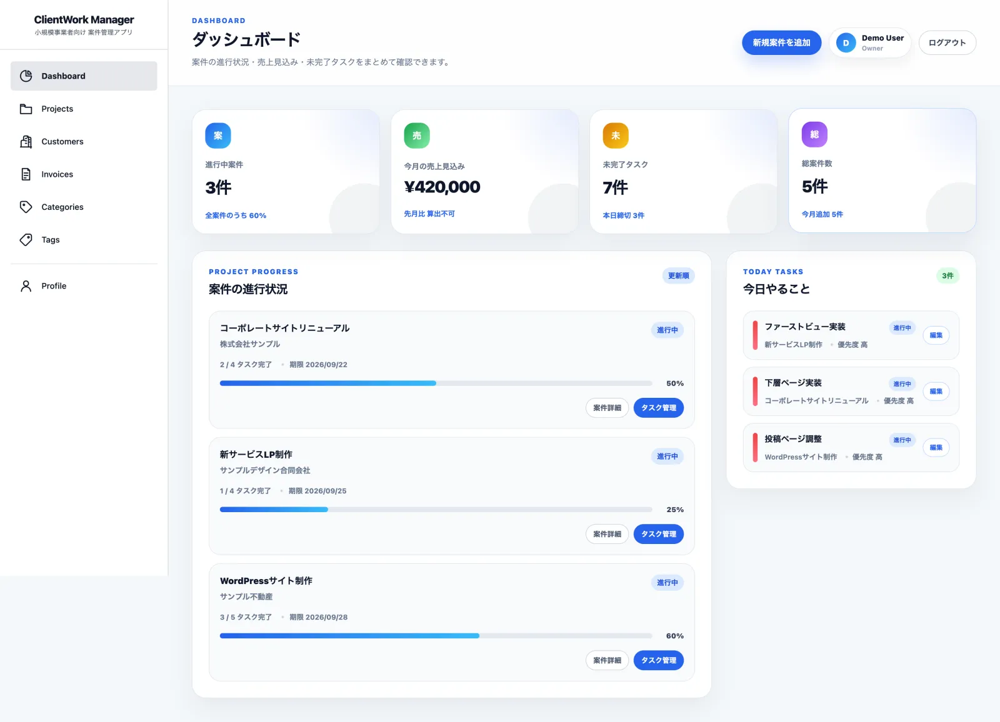

自主制作のWebアプリケーション
ClientWork Manager
案件管理から請求・入金確認までを一元化
請求書の作成からStripe決済・入金反映までをつなぐ、フリーランス・小規模事業者向けの業務管理アプリです。

- 制作形態
- 自主制作アプリ
- 担当
- 企画・DB設計・画面実装・バックエンド・テスト
- 期間・状態
- 2026年6〜9月に初版を制作。現在も継続開発中。
- 公開範囲
- コード・画面を公開／操作デモなし
ターゲット・ペルソナ
設計上の想定
- ターゲット
- フリーランス・小規模事業者
- ペルソナ
- 複数の案件を一人で進め、タスク・請求・入金確認をまとめて管理したい人。
制作の背景
案件と請求を一元管理
身近な人の業務上の困りごとをきっかけに、自分で企画しました。顧客、案件、タスク、請求書、支払いを同じアプリで管理できるよう、実務を想定した開発とLaravel・決済連携の学習を兼ねて制作しています。
案件を進める画面だけでなく、請求後に何を根拠として「入金済み」にするかまでを考えています。紹介するのは実装とデモ画面で、商用運用の実績ではありません。
請求から入金反映まで
決済と入金状況を同期
請求書を出したあとも、支払いの状態を追えるようにしています。
ClientWork Manager
所有者・案件・金額・通貨を照合
支払い成功を確認したときだけ更新
請求書と異なる決済を、そのまま反映しない。
決済金額と通貨はブラウザから受け取らず、保存済みの請求書から取得します。支払い途中の決済は再利用し、新規作成には請求書と試行番号から作る冪等性キーを付けています。
通知を受け取ると、決済と請求書の所有者・案件・金額・通貨を照合。行をロックしたDBトランザクションの中で決済の状態を同期し、支払い成功時に対象の請求書を入金済みにします。

代表的な設計判断
再送でも入金日時を維持
Webhookを受け取るたびに入金日時を設定すると、再送された通知によって、最初の入金日時が変わってしまいます。
決済側は初めて成功したときだけ日時を保存し、請求書側も入金済みなら再設定しないようにしています。
初回だけ日時を保存する実装if ($status === 'succeeded'
&& $payment->paid_at === null) {
$attributes['paid_at'] = now();
}paid_at が未設定のときだけ保存するため、再同期でも最初の日時が残ります。
既存テストで扱っているケース
- 同じ成功通知を2回受信
- 決済が1件のまま、入金日時を維持する。
- 決済と請求書の金額が不一致
- 決済・請求書の両方が更新前の状態に戻る。
- 署名を検証できない通知
- 通知を拒否し、正常な決済として取り扱わない。

業務全体の画面
業務全体をひとつに
顧客・案件・タスクの管理、検索とCSV出力、請求書のPDF出力・メール送信を実装しています。
管理側の請求書は所有者だけが閲覧でき、発行時の請求先情報はスナップショットとして保存します。あとで顧客情報を変えても、発行済みの請求内容は変わりません。
請求書の権限制御を見る制作範囲と使用技術
制作概要
- 技術
- PHP 8.5 / Laravel 10 / MySQL 8.4 / Docker
Stripe / Dompdf / Fortify / Sanctum / PHPUnit
掲載したテストはリポジトリ内の実装例です。実サービスでの商用運用や、本番環境の同時実行まで検証したことを示すものではありません。
画面と、その裏側の実装をあわせてご覧ください。